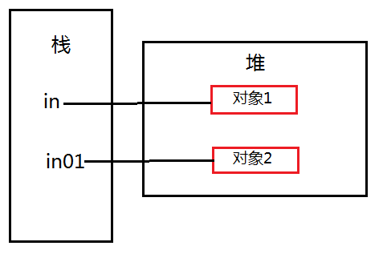

概述
1.什么是参数传递？
1 | 调用方法时向形参传递数据的过程叫做参数传递。 |
2.变量类型
1 | 在Java中，我们将指向基本类型数据的变量称为原始变量，将指向对象的变量称为引用变量。 |
值传递
1.什么是值传递？
1 | 将变量的副本传入方法，方法内外操作隔离，在方法内对变量的操作不会反映到方法外的变量中。 |
2.原始变量
1 | public void change(int b) { |
- 实际输出：9
在参数传递时，按照值传递的规则，变量b接收一个a的副本，同样指向字面值“9”：
接下来，在方法内部，为b赋值7，这样b指向7，由于a与b是两个相互独立的变量，两者之间没有引用与被引用的关系，a依然指向9：
3.String
1 | public void change(String str01) { |
- 实际输出：
www.baidu.com
在参数传递时，str将自身的一个副本传递给str01，这样str01也指向堆中存放“www.baidu.com”的对象：
在方法内部为str01赋值，这样str01就指向方法区字符串常量池中的”baidu”，str依然指向堆中的“www.baidu.com”，str与str01指向不同的对象，相互之间不影响：

这里需要注意一点：java将String设计成不可改变的对象，即一旦String对象包含的字面值发生改变，java就会新建一个对象，并将变量指向新的对象。
4.StringBuilder
1 | public void change(StringBuilder builder01) { |
- 实际输出：Hello World!
在参数传递完成以后，builder01变量获得builder变量的一个副本，副本与原始变量指向堆中同一个对象：
在方法内部，变量builder没有指向新的对象，依然与builder指向同一对象，所以当builder访问堆中同一对象时，数据发生改变：
5.自定义类型
1 | public class MyInner { |
- 实际输出：1
执行过程同StringBuilder执行过程相同，这里不再赘述。下面对上面的代码做一点改动，如下：
1 | public class MyInner { |
- 实际输出：9
参数传递完成时，in01与in指向同一个对象，in01对对象的操作等同于in对对象的操作，接着在方法内部执行”in01=new MyInner();”，这样in01 就指向了一个新的对象，in01所有的操作都与in无关了：

综合以上的运行结果与分析，可知java参数传递方式符合值传递。
引用传递
什么是引用传递？
1 | 将变量自身的内存地址传入方法中，方法中的变量指向方法外的变量，在方法中对变量的操作就是对方法外变量的操作 。 |